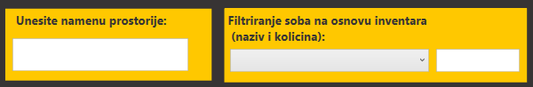

Klikom na dugme Sobe otvara se prikaz svih prostorija koje se nalaze u bolnici.Moguce je vrsiti dodavanje nove prostorije, brisanje prostojece iz evidencije kao i izmenu podataka prostorije.
Takodje, moguce je vrsiti pretragu prostorija na osnovu namene kao i naziva i kolicine inventara na nivou prostorije. 
Klikom na dugme inventar otvara se prikaz inventara u izabranoj prostoriji.
Klikom na zakazi renoviranje otvara se forma za zakazivanje renoviranja.Detaljnije na linku.
Klikom na renoviranje otvara se prikaz svih zakazanih renoviranja u narednom periodu.